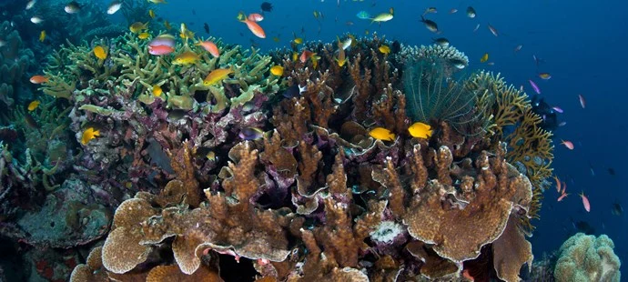
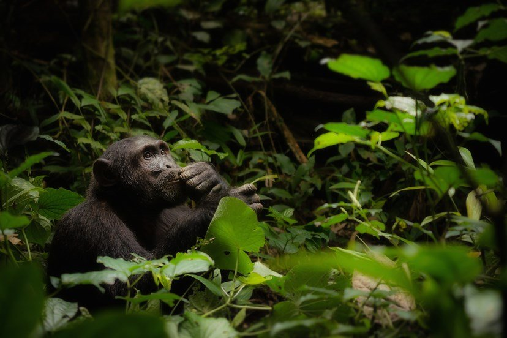

Wat is er aan de hand?
In onze wereld wordt 28% van plant- en diersoorten bedreigd. Stropers, illegale handel in dieren, verdwijnen van leefgebied en mens-dier conflicten zorgen ervoor dat er steeds meer dieren met zorgwekkende status op de 'Rode Lijst' van IUCN komen te staan. Wij focussen op een aantal soorten uit deze lijst. Door deze dieren en hun leefgebied te beschermen profiteren alle andere dieren die in hetzelfde gebied leven, daarvan mee.
(Kom in) beweging
Het Wereld Natuur Fonds is meer dan een goed doel dat je om geld vraagt. We helpen je om in actie te komen voor jouw wereld. Het gaat niet alleen om projecten ‘daar’, maar juist ook om ons eigen gedrag ‘hier’. Jij kan ons steunen met je tijd of een donatie, en wij helpen jou om duurzame keuzes te maken in je eigen leven. Natuurbeschermen hoeft niet moeilijk te zijn!
We werken elke dag met hart en ziel aan een wereld met ruimte voor mens én natuur. In onze beweging is plaats voor iedereen die de natuur een warm hart toedraagt.
-
Jaguar

Jaguar
Zijn botten en poten worden gebruikt als ingrediënten in traditionele medicijnen.
-
Orang-oetan
Orang-oetan
Het gebied waarin orang-oetans leven wordt steeds kleiner.
-
Panda

Panda
Steeds minder bamboebossen voor de panda.
-
Haai

Haai
Haaien worden nog steeds massaal gevangen voor consumptie.
-
Walvis

Walvis
Nogsteeds het doelwit van walvisjagers.
-
Zeeschildpad
Zeeschildpad
Verschillende soorten zeeschildpadden worden bedreigd met uitsterven.
-
Neushoorn

Neushoorn
Er zijn nog maar 30.000 neushoorns op de wereld.
-
Leeuw

Leeuw
Ook deze krachtige en majestueuze grote kat heeft het niet makkelijk.
-
Tijger

Tijger
Het aantal wilde tijgers is met meer dan 95% afgenomen.
-
Dolfijn

Dolfijn
De zee is niet zo veilig meer voor deze mooie zoogdieren.
-
Olifant
Olifant
Sterk, slim maar kwetsbaar. Help ons deze reuzen te beschermen.
-
IJsbeer

IJsbeer
Het leefgebied van de ijsbeer verdwijnt door smeltend zee-ijs.
-
Luipaard

Luipaard
Er wordt nog steeds grof geld betaald voor een bontjas van een luipaardvacht.
-
Koraal
Koraal
De laatste 30 jaar is bijna de helft van al het koraal verdwenen.
Waar zijn we actief?
WWF is op meer dan 130 plekken in de wereld actief.
-
Amazone
Het Amazonegebied gonst het hele jaar door van het meest exotische leven.

-
Tropisch Afrika
Het Congobekken wordt vaak het Groene Hart van Afrika genoemd, waar veel dieren leven.

-
Noordpool
Een bevroren oceaan is het ruige leefgebied van de ijsbeer, de narwal en de walrus.

-
Zuidelijk Afrika
In het stroomgebied van de Zambezi komen overweldigende natuurverschijnselen voor.

Wat doet WWF?
-
1
Beschermde leefgebieden
WWF zet zich in voor beschermde leefgebieden en het verbinden van natuurgebieden. Door een groot natuurlijk netwerk van beschermde gebieden en bossen aan te leggen kunnen we dieren als tijgers, olifanten en neushoorns beter beschermen.
-
2
Verbinden versnipperde gebieden
Vaak staat het leefgebied van dieren onder druk door de aanleg van landbouwgrond, wegen, steden en dorpen en de ontwikkeling van mijnbouw. Door natuurgebieden met elkaar te verbinden en ecoducten aan te leggen kunnen dieren veiliger door een gebied bewegen voor bijvoorbeeld voedsel.
-
3
Strengere milieuregelgeving
In afgelegen natuurgebieden zoals het Arctisch gebied is het bijna onmogelijk om na een (scheep)ongeval de rotzooi op te ruimen. Daarom lobbyen we voor scherpe veiligheids- en milieuwetgeving.
-
4
Rangers
Met rangers, voorzien van moderne communicatieapparatuur en uitrusting, bestrijden we stroperij. WWF werkt hierin nauw samen met TRAFFIC, een organisatie die stroperij en illegale handel in wilde dieren bestrijdt.